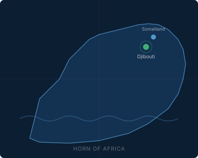

AI-powered OSINT for national security. Validated on Somali speech. 37.8% lower WER than commercial systems.
We process decades of broadcast data to detect emerging threats, track propaganda, and provide early warning—from a region where persistent intelligence is scarce.

SomBench v1 is the first ground-truth evaluation of commercial and fine-tuned ASR systems on Somali speech. Fifty stitched clips, ~550 seconds total, scored against verified references.
Coda Labs is building a platform to process and analyze broadcast data from a strategically critical region—Djibouti, Somaliland, and the broader Horn of Africa.
Automated ingestion and transcription of regional broadcast media for threat detection, propaganda tracking, and early warning.
Our fine-tuned pipeline outperforms commercial systems on Somali speech. Trained in ~1 hour on a single T4 GPU with 500 steps.
Father-son team with deep cultural and political ties to Djibouti and Somaliland. Local relationships enable data collection others cannot replicate.
Proof-of-concept validated on the skydheere/soomali-asr-dataset test split. Fine-tuned Whisper small (244M parameters) achieves mean WER 0.368. TRL 3.
Validation on in-domain broadcast recordings. Tests generalization from public dataset to real regional media archives.
Coda Labs is in active outreach with DIU, SOFWERX, AFWERX, and the Army’s JIOP.